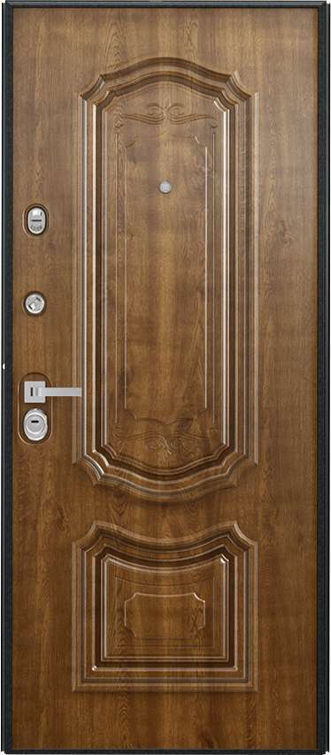

Преимущества дверей Torex
|
Качественная Благодаря оснащению производства новейшим автоматизированным оборудованием от мировых лидеров в области металлообработки двери Torex обладают стабильно высокими показателями заводского качества.Долговечная Двери Torex прослужат вам более 20 лет, потому что для их производства используются только проверенные и качественные материалы от ведущих мировых производителей.Безопасная Безопасность вашего дома гарантирует наличие не менее одного замка 4-го (высшего) класса по надежности и взломостойкости. |
 |
Надежная Максимально необходимые показатели по прочности, надежности, тепло- и звукоизоляции по ГОСТ 31173-2003 «Блоки дверные стальные. Технические условия» (М1 – высший класс ГОСТ) обеспечены конструкцией дверного полотна, которая разработана на основе 26-летнего опыта компании Torex.Герметичная Высокий уровень защиты от сквозняков, запахов и пыли обеспечивают: наличие двух и более контуров уплотнения; специальная регулировка притвора металлическим эксцентриком.Красивая Широкий размерный ряд, разнообразие дизайнов отделок, большой выбор доборных элементов для откосов позволяют добиться максимальной индивидуализации. |